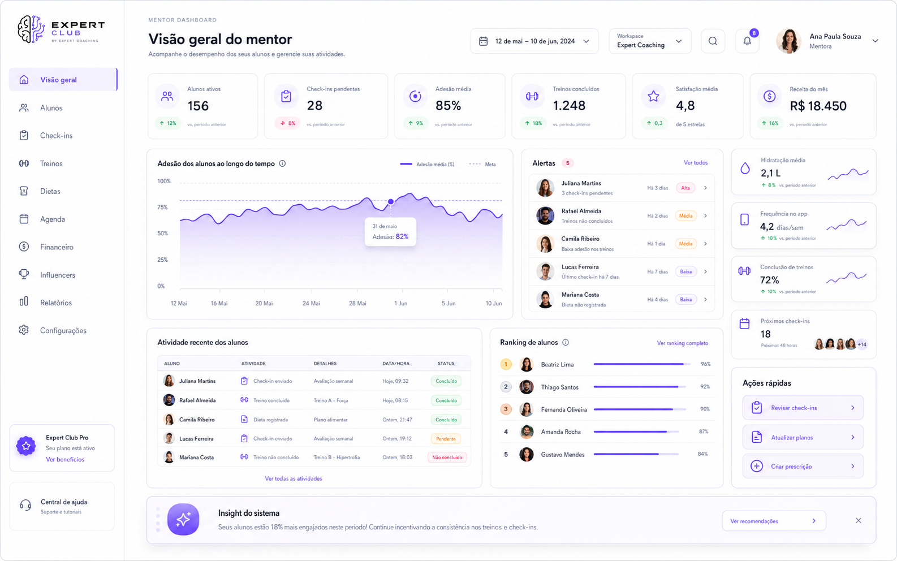
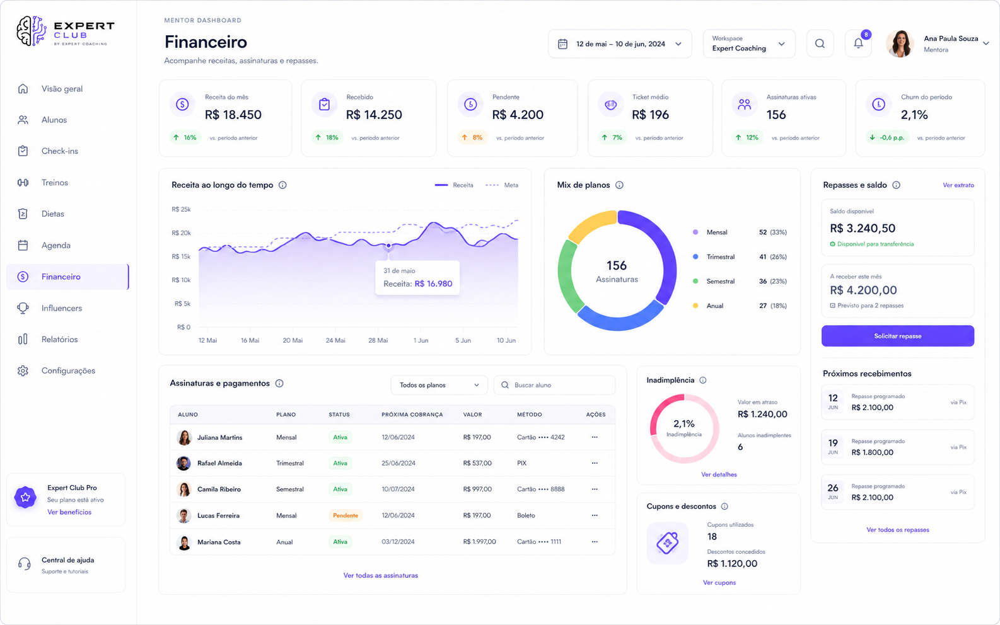
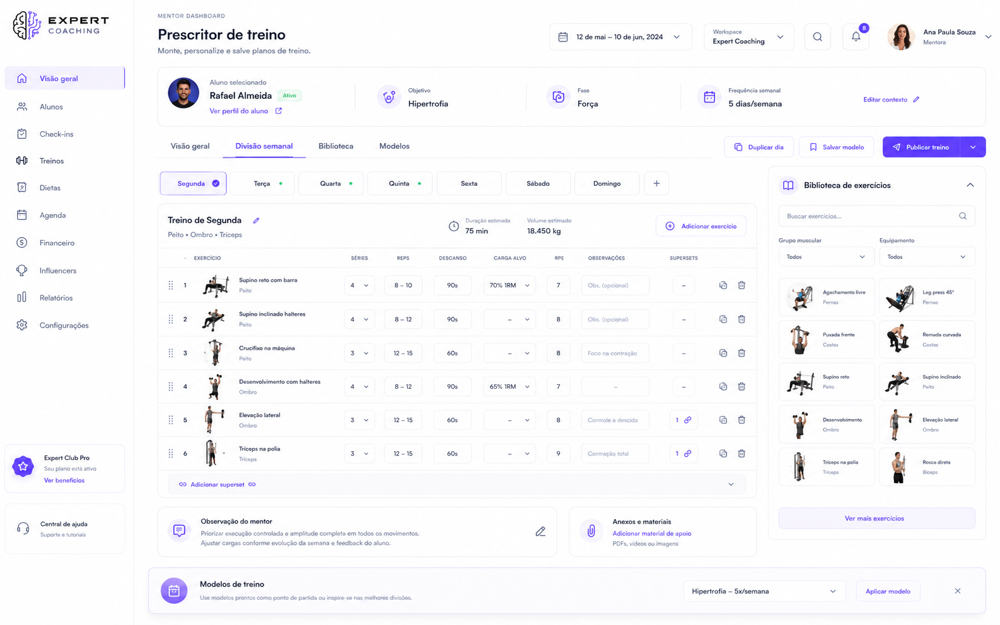
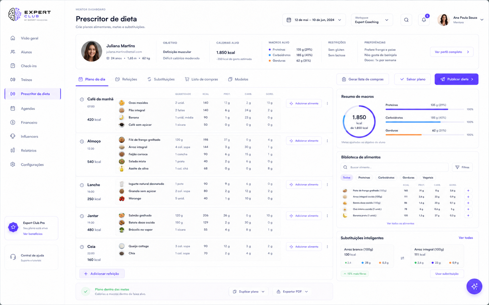
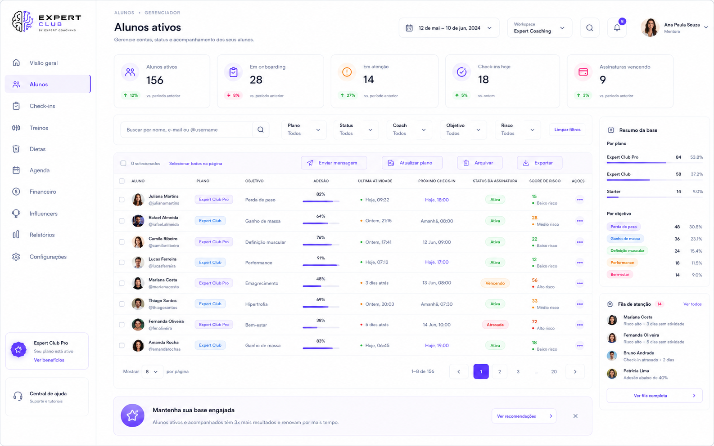
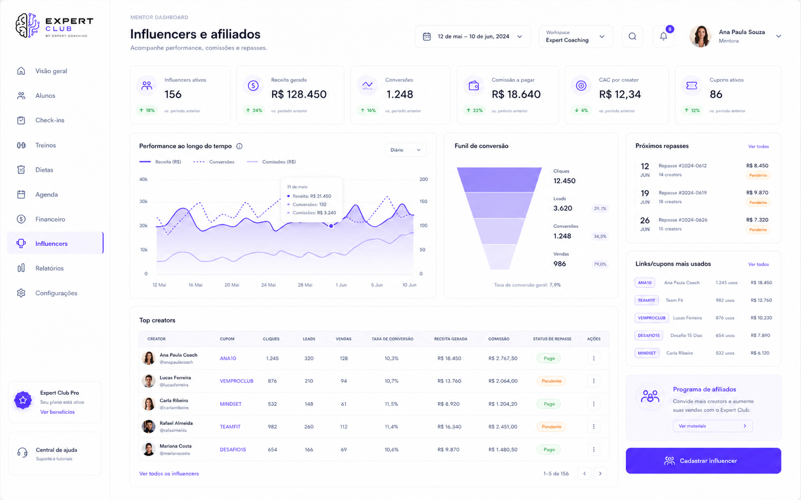
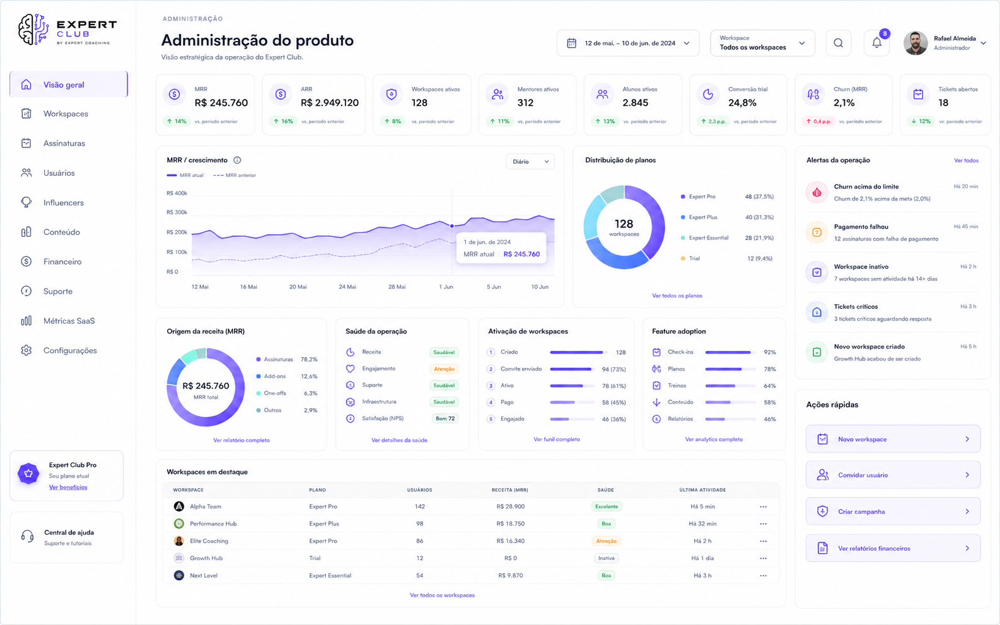

Expert Club
Telas Mentor/Admin — referência final
Dashboard do mentor, financeiro, prescritores, alunos ativos, influencers/afiliados e administração do produto.
Design tokens essenciais
Base mínima para manter consistência visual entre todas as telas.
Violet Electric#6C4DFF
Violet Soft#F1EAFE
App BG#FAFAFC
Surface#FFFFFF
Text#111827
Border#E8EAF2
Importante: o protótipo anterior tentou recriar as telas com HTML simplificado e por isso ficou diferente. Esta V2 corrige isso: as imagens entram como verdade visual, e o Codex deve implementar componentes reais comparando contra elas.
Visão geral do mentor
Rota sugerida: /mentor/overview

Módulos
- Sidebar mentor
- Topbar + filtros
- KPI strip
- Gráfico de adesão
Widgets
- Alertas
- Atividade recente
- Ranking de alunos
- Ações rápidas
Detalhes
- Cards 18px radius
- Ícones lineares violetas
- Badges sem overlap
- Sombras suaves
Critério
- Igual ao PNG
- Desktop 1440+
- Sem dark mode aqui
- Sem emoji no app final
Financeiro
Rota sugerida: /mentor/financeiro

Prescritor de treino
Rota sugerida: /mentor/treinos/prescritor

Prescritor de dieta
Rota sugerida: /mentor/dietas/prescritor

Alunos ativos
Rota sugerida: /mentor/alunos

Influencers e afiliados
Rota sugerida: /mentor/influencers

Administração do produto
Rota sugerida: /admin/overview
